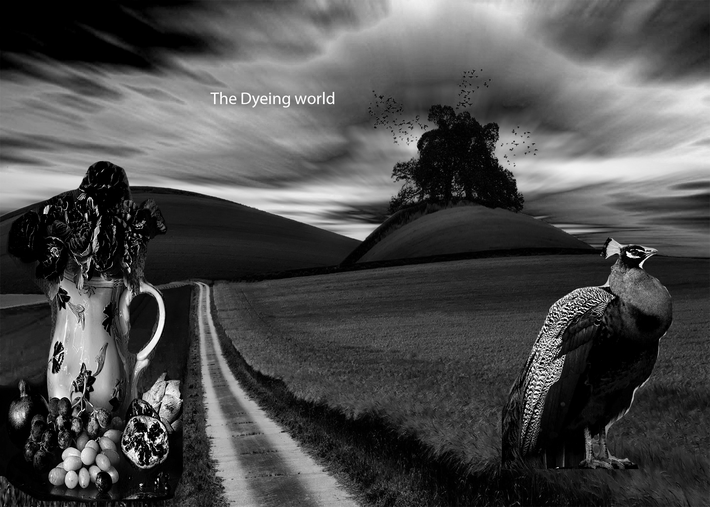
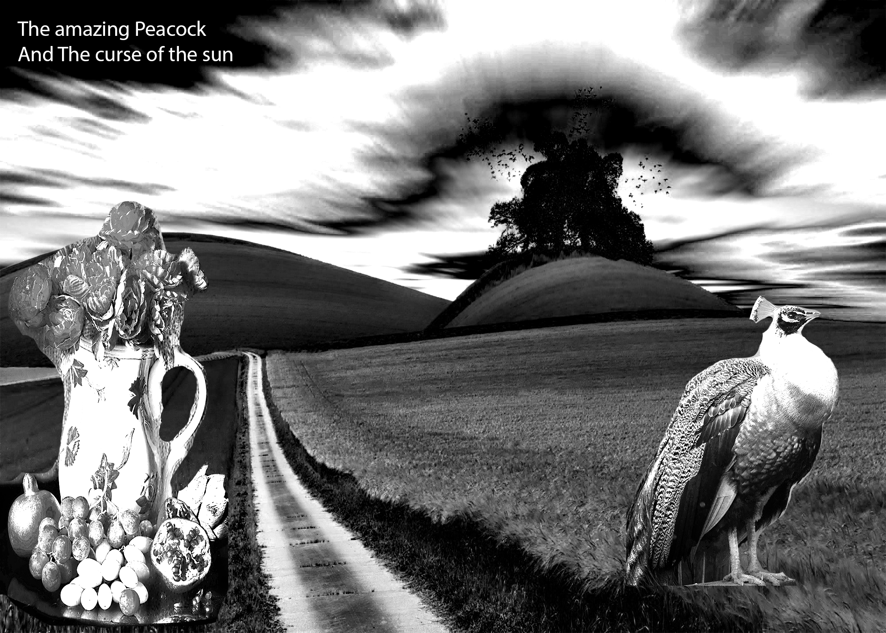
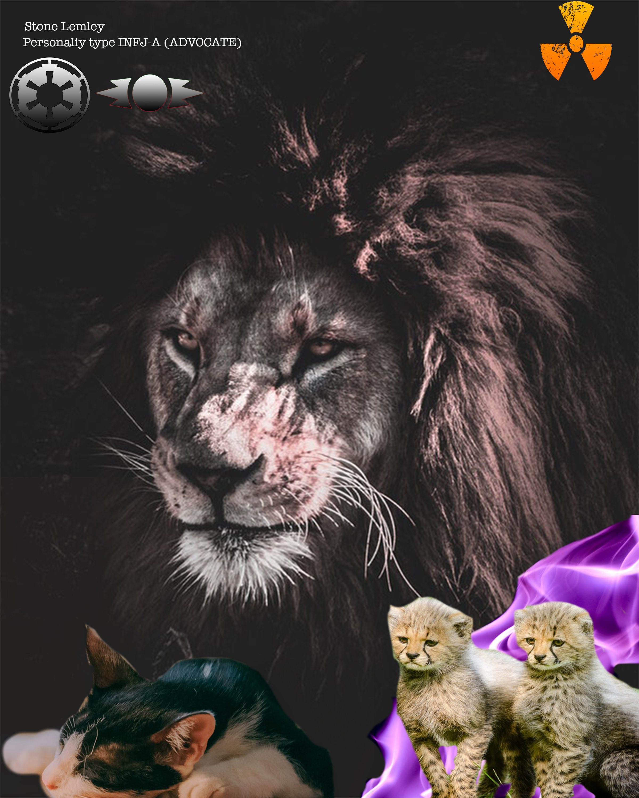

Best of Gallery

This peice of work is in the catagorey because it was tooken the time on.
This Peice i chose to put in this catagorey because it took me awhile to make.
I put this In this catagorey to show a peice easy but hard at the same time.
2D Design Gallery
I Chose this peice because It is a good represation of an 2D design.
I Chose this peice because this is a a comic like thing which is 2D.

I Chose this peice because it is a book cover.
Photoshop Gallery

I Chose this peice because it shows the dark contrast part of my artistic part of me.
I Chose this peice because this shows i can make 3D like things.

I Chose this peice because I wanted to show what my talents was like when i started photoshop.